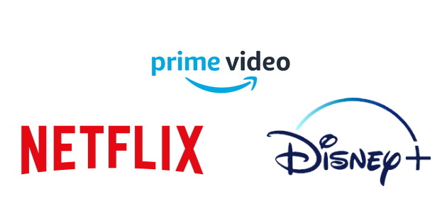

O projeto usa como base os dados contidos em três datasets:
A partir desses dados, apresentaremos uma série de visualizações que permitem analisar e comparar características do conteúdo oferecido por cada serviço de streaming. O objetivo é fornecer uma visão ampla e comparativa sobre o comportamento e perfil dos conteúdos das três plataformas, identificando similaridades, diferenças e potenciais padrões na oferta de entretenimento digital.
O dataset contém no total 21.792 títulos, sendo 41% do Prime Video, 17% do Disney+ e 42% da Netflix, divididos entre filmes, séries e programas de TV. Cada título apresenta informações como data de lançamento, classificação indicativa, duração, gênero e métricas de desempenho.
Em relação à avaliação dos títulos, o dataset utiliza métricas do IMDb e do TMDB, pilares globais de metadados da indústria audiovisual.
O Scatterplot (Gráfico de Dispersão) apresenta a relação entre as notas do IMDb e do TMDB. Esta visualização é utilizada para verificar o grau de concordância entre as avaliações do público geral e da comunidade do TMDB, permitindo identificar correlações, discrepâncias e padrões entre as duas métricas.
Para aprofundar a análise estatística das notas do IMDb, utilizamos o Boxplot (Gráfico de Caixa). Esta visualização foca exclusivamente na distribuição das notas da plataforma, permitindo identificar a mediana das avaliações, a concentração dos dados nos quartis centrais e, principalmente, a presença de outliers — títulos que receberam notas muito distantes da média geral do catálogo, seja por uma aclamação excepcional ou por uma rejeição severa do público.
A análise espacial dos dados revela que a distribuição geográfica dos três serviços de streaming apresenta um padrão massivamente concentrado nos Estados Unidos. Esse domínio reflete a origem das plataformas e o peso histórico de Hollywood na indústria audiovisual global.
Apesar dessa semelhança estrutural, observamos nuances importantes na diversificação de catálogos. O Prime Video e a Netflix demonstram uma estratégia de expansão internacional mais agressiva, com uma presença significativa de produções estrangeiras. Um destaque notável é a Índia, que surge como o segundo maior polo de conteúdo nessas duas plataformas, evidenciando o investimento em mercados de exportação cultural de massa (como Bollywood).
Em contrapartida, a Disney+ apresenta uma menor representatividade de títulos produzidos fora do eixo norte-americano, especialmente no mercado indiano. Essa diferença pode ser atribuída ao foco da plataforma em franquias globais proprietárias, que tendem a centralizar sua produção nos Estados Unidos em comparação ao modelo de licenciamento e produção local mais diversificado de seus concorrentes.
A análise das bibliotecas revela que Drama, Comédia e Ação são os pilares dos três serviços, liderando o volume de títulos. Essa tríade reflete as preferências universais de consumo e a estratégia das plataformas em manter catálogos versáteis para diferentes perfis de usuários.
A Disney+, contudo, apresenta um posicionamento de nicho bem definido: há uma predominância de filmes do gênero Família e uma classificação indicativa significativamente mais baixa que a dos concorrentes. Isso confirma a estratégia da plataforma em ser o ambiente principal para o público infanto-juvenil, contrastando com a maior oferta de conteúdos maduros na Netflix e no Prime Video.
Quanto à cronologia, observa-se que a grande maioria dos títulos foi lançada entre 2010 e 2020. Esse pico de datas de lançamento reflete o período de maior expansão da história da indústria audiovisual, impulsionado pela "guerra dos streamings" e pelo investimento massivo em produções originais, que passaram a ser lançadas em um ritmo sem precedentes na última década.
Para uma exploração interativa e aprofundada, este projeto divide-se em duas ferramentas complementares. No Dashboard, você encontrará visualizações geográficas (mapas de calor por plataforma e globais) que revelam a soberania de produção de cada país, além de gráficos de dispersão e barras que comparam o volume de dados e o comportamento das notas (IMDb vs. TMDB). A ferramenta também permite filtrar gêneros e analisar a evolução temporal dos lançamentos desde o século XX.
Já no Mapa de Redes, a análise foca na conectividade. É possível visualizar como títulos, gêneros e elencos se entrelaçam, identificando padrões de colaboração e clusters de nicho que definem a identidade de cada streaming.